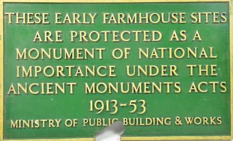

Blog
Heritage past, present and future

This week, I was invited to attend a conference and debate on the theme of ‘Heritage Past, Present and Future’, co-organised by the AHRC, English Heritage, The National Trust and Society of Antiquaries of London, held at the Society of Antiquaries, Burlington House. The conference marked the centenary of the Ancient Monuments Consolidation and Amendment Act of 1913 – a landmark moment in the development of heritage conservation and protection in the UK. The conference brought together delegates from UK universities and a wide range of heritage organisations across England, Scotland, Wales and Northern Ireland.
There were some fascinating and challenging contributions. Early on, Graham Fairclough, of Newcastle University, alerted us to the difficulty of defining the term ‘heritage’, with its ‘patina’ of varied usage and its sense of the values and perceptions we bring to a site as much as the material fabric of a place itself. Caitlin DeSilvey of the University of Exeter spoke provocatively about how ‘heritage’ depends on the stability of material fabric and the continuity of cultural memory, arguing that ‘engagement with the past can be based on instability and transience’ – decay, re-use and ‘letting go’ – rather than protection and preservation.
Loyd Grossman, Chairman of the Churches Conservation Trust and Heritage Alliance, used some arresting phrases and images to make some important and challenging points. In his responses to questions he emphasised the importance of communicating and engaging, quoting an unnamed Canadian sociologist who observed that ‘Anyone who thinks there’s a difference between education and entertainment doesn’t know the first thing about either of them’. He also suggested that perhaps we could do with a ‘What Would William Morris Do?’ T-shirt to keep us all on the right path…
Some aspects of the discussion were more problematic, though, and left me acutely aware of the challenges and culture changes facing many working in heritage and public engagement. Recurrent references to ‘the heritage’ and ‘the public’ conveyed the sense of a monolithic ‘collection’ of built / environmental assets (and a neat, unambiguous set of values and national ‘story’ which gave them meaning) and an equally uniform, passive ‘audience’. Occasionally the rhetoric tipped into a paternalism redolent of 1913. I was really heartened to hear the contribution by Alex Hale (Royal Commission on the Ancient and Historical Monuments of Scotland), which gave exciting examples of knowledge exchange and collaborations with local communities in Bute and elsewhere. He argued that ‘there must be a shared, if sometimes contested, knowledge base’ and that ‘we must be flexible and prepared to reconsider our positions regularly’. Hints of this position were also present in a brief reference from Stephen Trow (English Heritage) to the notion of ‘under-represented heritages’ (a pluralist vision!), and in comments from representatives of the Heritage Lottery Fund who stressed their receptivity to local communities’ own stories, perceptions, values and expertise about their local heritage.
Loyd Grossman spoke of the challenge to make the relationship between heritage organisations and the public ‘more collegiate and consensual’. It seems that building genuine, bilateral Knowledge Exchange and collaboration – based on mutual respect for different kinds of expertise and knowledge – will be a crucial part of this. This is a challenge for all of us working on the ‘City Witness’ project. We don’t want simply to pour information into a passive audience, but to engage people with their own heritage – to learn from local communities and experts and involve them in what we’re doing. We’re currently discussing ways we can work towards this in our activities, events and research.
Şħȧřḗ ǿƞ Ŧẇīŧŧḗř Şħȧřḗ ǿƞ Ƒȧƈḗƀǿǿķ